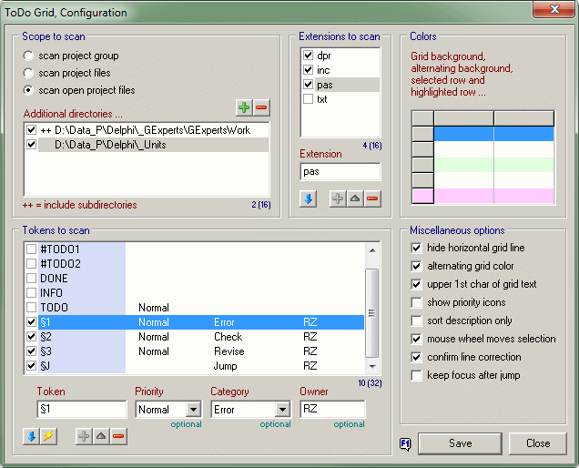

ToDo GridConfiguration (Options) |
  
|
ToDo GridConfiguration (Options) |
|
this page .. |
see also .. |
|---|---|
General |
|
|
|
|
|
|
ToDo Grid Expert is not yet available in GExperts |
Overview |
|
The configuration of the "ToDo Grid" expert is an important and probably frequently opened window, as it allows the rules for the scan to be defined very individually. All settings made by the user are closely monitored, so that, if necessary, a new scan is performed automatically when changes are saved. This allows the results of the settings to be immediately visible without having to close the window. Adjustments can therefore be made quickly without having to reopen the configuration.
Notice |
▪Scanning data is a time-consuming operation and the number of directories and tokens to be scanned is a crucial factor. Therefore, you should only activate as many directories and tokens for scanning as are actually necessary. |

Scope to scan |
|
The "Scope to scan" group box is used to specify the directories to be scanned. The three radio buttons allow you to select the directories based on the project currently active in the IDE.
▪The "Scan project group" selection is only useful if several projects are grouped together; if this is not the case, the "Project files" selection corresponds to this.
▪The selection of "Scan Project files" takes into account all files registered in the project.
▪"Scan open project files" takes into account all files entered in the project that are currently open in the editor.
Below the radio buttons, you can optionally specify additional directories. For each directory in the listbox, you can specify by double-clicking that sub directories should be included (entry contains ++). Only list items selected in the checkboxes are considered for scanning.
The following commands are available for editing the additional directories. Please note that all changes must be explicitly submitted using the Save button!
Add directory |
The button opens a window where you can select the desired directory to add. You cannot enter duplicate directories in the list; the list can contain a maximum of 16 elements. |
|
Delete directory |
With the button you can remove the selected directory from the list. |
Extensions to scan |
|
The group box "Extensions to scan" defines the file name extensions that are used for scanning the extended directories; these name extensions do not apply to the scan of the directories of the project currently loaded in the IDE. Only list items selected in the checkboxes are considered for scanning.
The extension length is limited to 10 characters; the characters $ ~ - _ 0..9 A..Z a..z are accepted.
The following commands are available for editing the extensions. Please note that all changes must be explicitly submitted using the Save button!
Restore default extensions |
The button allows you to restore the default extensions (pas, inc, dpr, txt) provided by the application. |
|
Add extension |
Enters a new extension. This button is only enabled if a file name extension that is not yet in the list has been entered in the input field. A maximum of 16 list elements can be defined. |
|
Apply changes |
First, simply click to copy the desired list item into the edit field. You can then edit the entry and overwrite the selected list item, provided the text is different and not yet included in the list. |
|
Delete extension |
With this button you can remove the selected extension from the list. |
Tokens to scan |
|
The group box "Tokens to scan" defines the tokens that are used for scanning. Only list items selected in the checkboxes are considered for scanning. The assignment of the priority, category, and owner attributes is an optional feature that normally does not need to be used. Further information on the use of these additional attributes is described under Suggestions for efficient use.
The token length is limited to 10 characters; all characters in the range #33 .. #35 and #37 .. #126 and #167 are accepted - please remember that the $ sign and the space cannot be used.
The following commands are available for editing the token. Please note that all changes must be explicitly submitted using the Save button!
Restore default tokens |
The button allows you to restore the default extensions (pas, inc, dpr, txt) provided by the application. |
|
Sort list |
Clicking on the button sorts the list; with each click the sort changes to the next (or first) attribute (token, priority, category and owner). |
|
Add token |
Enters a new token. This button is only enabled if a token text that is not yet in the list has been entered in the input field. Different information about priority, category or owner does not justify a difference! A maximum of 32 list elements can be defined. |
|
Apply changes |
First, simply click to copy the desired list item into the edit field. You can then edit the entry and overwrite the selected list item, provided the token text is different and not yet included in the list OR there are different priority, category or owner values. |
|
Delete token |
With this button you can remove the selected token from the list. |
Colors |
|
While the three group boxes on the left are responsible for the file scan settings, the upper group box on the right allows you to set the main colors of the string grid. Please note that all changes must be explicitly submitted using the Save button; optical changes are immediately visible after save!
Double-clicking on the reference area in the example grid opens the color dialog in which the new color can be selected. In the color dialog custom colors can be created; the colors are automatically saved by the expert and restored when the dialog is called again. Right-clicking on the reference area in the example grid will restore the applications default color.
active row |
Color of the selected row in the active string grid. The default color corresponds to the Windows standard. |
default background |
Color of all unselected rows; the default color is a slightly tinted white. |
alternating background |
Color of every second unselected row (if the "alternating grid color" option is enabled); the default color is a very light green - this gives the grid a look like white/green striped continuous-sheet printer paper. |
highlighted row |
Color of the row marked as "highlighted" by the user (including the cell in the first column); the default color is a very bright red. |
Miscellaneous options |
|
While the three group boxes on the left are responsible for the file scan settings, the lower group box on the right controls the display and operation of the string grid. Please note that all changes must be explicitly submitted using the Save button; optical changes are immediately visible after save!
hide horizontal |
If enabled, the horizontal dividing line between the rows of the string grid is not displayed. If the next option is also inactive, the typical display of the string grid is shown. |
alternating grid color |
This option allows you to activate the alternate color for every second row of the grid. The color used for this is specified in the upper group box. Typically, the previous option is enabled together with this option. |
upper 1st char |
The description texts and owners listed in the source file are often not capitalized. Enabling this option will display the first letter of "Category", "Description" and "Owner" in uppercase. Otherwise, both values will be displayed exactly as written in the source code. |
show priority icons |
If this option is enabled, an additional icon will be displayed next to the text in the "Priority" column. This is always done in the "To-Do List" expert, but I think it's better to have this optionally. The icons are currently not editable. |
sort description only |
This controls the sorting of the "Description" column when the token is displayed before the description text. If not enabled, the token and description text are used together for the comparison. If this option is enabled, the sorting considers only the description text. |
mouse wheel |
The behavior of the mouse wheel is configurable here. If enabled, the row selection can be moved directly with the mouse wheel. To move the area marker in the scroll bar, you must hold down the Shift key additionally. In the opposite case, the area marker in the scroll bar is moved directly with the mouse wheel; to move the row selection, hold down the Shift key additionally. |
confirm line correction |
The "Goto source line" function may be incorrect due to a change in the source code. If the token is found in the immediate line range and this option is activated, a confirmation is displayed asking whether the stored line number should be corrected. |
keep focus after jump |
If this option is enabled, the "Goto source line" function brings the corresponding line into the visible area and selects the entire line, but keeps the focus in the string grid. If the option is not activated, the caret is placed at the beginning of the relevant line and the focus is transferred to the editor window. |